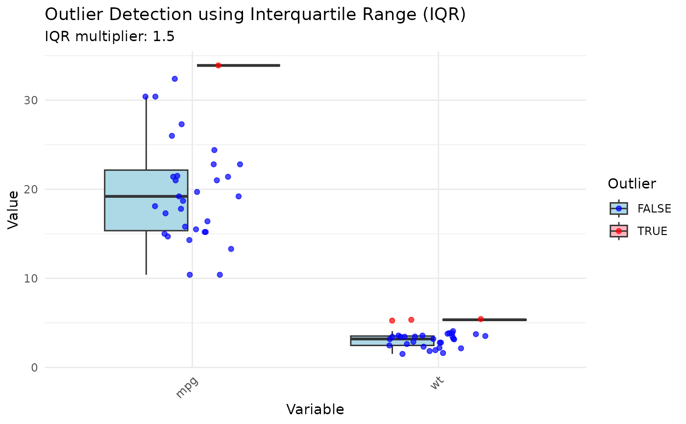

Detect outliers in the data
Value
A list with outlier detection results:
- method
The detection method used (character).
- method_name
Human-readable method name (character).
- threshold
The threshold value used (numeric).
- threshold_label
Formatted threshold description (character).
- outlier_flags
A logical matrix (observations x variables).
- any_outlier
Logical vector indicating if each observation is an outlier in any variable.
- outlier_counts
List with
total,by_variable, andby_observationcounts.- outlier_indices
Integer vector of outlier row indices.
- plot
A
ggplotobject, orNULLifplot = FALSE.
Examples
# \donttest{
tl_detect_outliers(mtcars, variables = c("mpg", "wt"), method = "iqr")
#> $method
#> [1] "iqr"
#>
#> $method_name
#> [1] "Interquartile Range (IQR)"
#>
#> $threshold
#> [1] 1.5
#>
#> $threshold_label
#> [1] "IQR multiplier: 1.5"
#>
#> $outlier_flags
#> mpg wt
#> [1,] FALSE FALSE
#> [2,] FALSE FALSE
#> [3,] FALSE FALSE
#> [4,] FALSE FALSE
#> [5,] FALSE FALSE
#> [6,] FALSE FALSE
#> [7,] FALSE FALSE
#> [8,] FALSE FALSE
#> [9,] FALSE FALSE
#> [10,] FALSE FALSE
#> [11,] FALSE FALSE
#> [12,] FALSE FALSE
#> [13,] FALSE FALSE
#> [14,] FALSE FALSE
#> [15,] FALSE TRUE
#> [16,] FALSE TRUE
#> [17,] FALSE TRUE
#> [18,] FALSE FALSE
#> [19,] FALSE FALSE
#> [20,] TRUE FALSE
#> [21,] FALSE FALSE
#> [22,] FALSE FALSE
#> [23,] FALSE FALSE
#> [24,] FALSE FALSE
#> [25,] FALSE FALSE
#> [26,] FALSE FALSE
#> [27,] FALSE FALSE
#> [28,] FALSE FALSE
#> [29,] FALSE FALSE
#> [30,] FALSE FALSE
#> [31,] FALSE FALSE
#> [32,] FALSE FALSE
#>
#> $any_outlier
#> [1] FALSE FALSE FALSE FALSE FALSE FALSE FALSE FALSE FALSE FALSE FALSE FALSE
#> [13] FALSE FALSE TRUE TRUE TRUE FALSE FALSE TRUE FALSE FALSE FALSE FALSE
#> [25] FALSE FALSE FALSE FALSE FALSE FALSE FALSE FALSE
#>
#> $outlier_counts
#> $outlier_counts$total
#> [1] 4
#>
#> $outlier_counts$by_variable
#> mpg wt
#> 1 3
#>
#> $outlier_counts$by_observation
#> [1] 0 0 0 0 0 0 0 0 0 0 0 0 0 0 1 1 1 0 0 1 0 0 0 0 0 0 0 0 0 0 0 0
#>
#>
#> $outlier_indices
#> [1] 15 16 17 20
#>
#> $plot

#>
# }